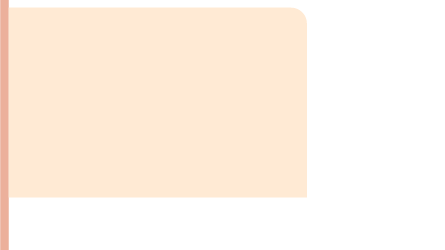

AMPLIANDO CONHECIMENTOS
A PALAVRA AÇAÍ VEM DO TUPI E SIGNIFICA “PLANTA QUE CHORA”.
ORIGINÁRIO DA REGIÃO AMAZÔNICA DO BRASIL, O AÇAÍ É COLHIDO DAS PALMEIRAS NATIVAS E TEM PROPRIEDADES NUTRITIVAS QUE TRAZEM BENEFÍCIOS PARA A SAÚDE.
ESSE FRUTO, CONHECIDO POR SEU SABOR ÚNICO, PODE SER CONSUMIDO NA FORMA DE CREMES OU SUCOS.
É UMA EXCELENTE FONTE DE ANTIOXIDANTES, FIBRAS E ÁCIDOS GRAXOS ESSENCIAIS.
OS POVOS INDÍGENAS UTILIZAM ESSE ELEMENTO NATURAL DE DIVERSAS FORMAS.
POR EXEMPLO:

• O CAULE (O PALMITO) É CONSUMIDO COMO ALIMENTO.
• A FIBRA DO CAROÇO, BEM COMO O TRONCO, É UTILIZADA NAS CONSTRUÇÕES.
• AS FOLHAS SÃO USADAS NO ARTESANATO E NA COBERTURA DAS MORADIAS.